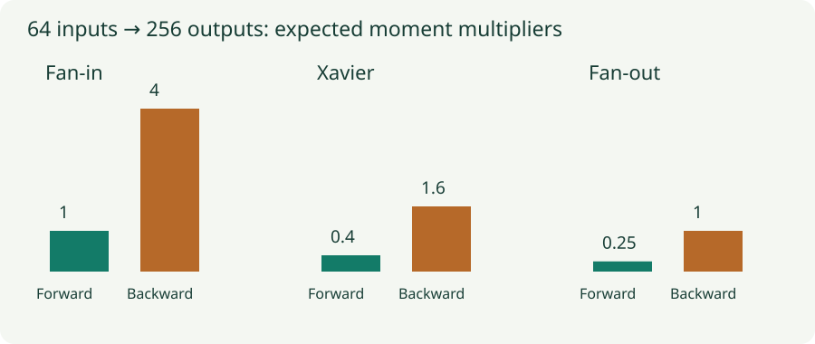

Xavier and LeCun Initialization: Count the Inputs and Outputs
Derive fan-in and fan-out scaling, translate variance into uniform bounds, and inspect signal propagation.
Fan-based initialization chooses weight variance from the number of terms added in a layer. LeCun scaling prioritizes forward signal scale. Xavier, also called Glorot initialization, balances forward and backward considerations. Their formulas become easier to remember once we derive what each denominator is counting.
1. Fan-in scaling preserves a forward second moment
For a linear layer $z=Wa$ with $n_{\rm in}$ inputs per output, zero-mean independent weights of variance $v$, and incoming activation second moment $q$, the previous chapter derived $\mathbb E[z_i^2]=n_{\rm in}vq$. To keep that moment at $q$, choose
This is commonly called LeCun normal initialization. The second parameter of the normal distribution here is the variance; the standard deviation passed to a sampler is $1/\sqrt{n_{\rm in}}$. Confusing those two shrinks weights by another square root of fan-in.
For a width-100 layer, variance $0.01$ means standard deviation $0.1$. The expected output second moment is $100\times0.01\times q=q$. This argument assumes linear behavior or a separately handled activation transformation. It is not a complete derivation for every nonlinearity.
2. Backpropagation counts outputs instead
For a linear layer, $g_{\rm in}=W^Tg_{\rm out}$. Each incoming gradient coordinate sums $n_{\rm out}$ terms. Under the analogous independence approximation, its second moment is multiplied by $n_{\rm out}v$. Preserving that per-coordinate scale suggests $v=1/n_{\rm out}$.
If $n_{\rm in}=n_{\rm out}$, the two requirements agree. If a layer expands from 64 to 256 units, fan-in scaling preserves forward second moments but multiplies backward per-coordinate moments by 4. Fan-out scaling preserves backward moments but multiplies forward moments by $1/4$.
These statements concern per-coordinate moments, not total vector energy. A vector with four times as many equally scaled coordinates has four times the expected squared norm. Keep the quantity being preserved explicit.
3. Xavier balances the two counts
Xavier uses the average of the two fan counts in the denominator:
One way to see the compromise is to require the average of the forward multiplier $n_{\rm in}v$ and backward multiplier $n_{\rm out}v$ to be one. This produces the formula above. It averages the fan counts before taking a reciprocal; it is not the arithmetic average of $1/n_{\rm in}$ and $1/n_{\rm out}$.
For 64 inputs and 256 outputs, Xavier variance is $2/320=0.00625$. The forward multiplier is $0.4$ and the backward multiplier is $1.6$. Neither is exactly one, but their average is. This balance is a design choice motivated by propagation, not a theorem that Xavier is best for every rectangular layer.

4. Convert variance into uniform bounds
A uniform variable on $[-a,a]$ has mean zero and variance $a^2/3$. Matching a desired variance $v$ therefore requires $a=\sqrt{3v}$:
| Initialization | Normal standard deviation | Uniform bound $a$ |
|---|---|---|
| LeCun / fan-in | $1/\sqrt{n_{\rm in}}$ | $\sqrt{3/n_{\rm in}}$ |
| Xavier / Glorot | $\sqrt{2/(n_{\rm in}+n_{\rm out})}$ | $\sqrt{6/(n_{\rm in}+n_{\rm out})}$ |
| Fan-out | $1/\sqrt{n_{\rm out}}$ | $\sqrt{3/n_{\rm out}}$ |
For the 64-to-256 Xavier example, the normal standard deviation is approximately $0.07906$, while the uniform bounds are approximately $\pm0.13693$. These distributions share a variance but differ in higher moments and tails. Matching variance does not make their sampled matrices identical.
5. Lab: compare expected and measured amplification
One rectangular linear layer
Change the input and output widths and choose a rule. A sampled Gaussian weight matrix processes 256 Gaussian input vectors and backpropagates 256 independent Gaussian output directions. Bars compare the theoretical second-moment ratios with measured ratios.
Make the widths equal: all three variance rules coincide. Then make the output wider while keeping the input width fixed. The experiment separates a scaling argument from one realization of a random matrix, and avoids mistaking a finite-sample mismatch for a broken formula.
6. Count the actual connections
For a dense weight matrix stored as output × input and applied as $z=Wa$, fan-in is the second dimension and fan-out the first. Many libraries apply batched inputs as $xW^T$ while keeping that same storage layout. If you store a custom matrix in the opposite orientation, initialize the appropriate transpose.
For an ordinary convolution, the usual fan-in count is input channels times kernel area. For grouped convolution, each output sees only the input channels in its group, so this becomes $(C_{\rm in}/G)k_hk_w$. The conceptual backward connectivity count also depends on groups and spatial overlap. Initialization helpers often compute fans from stored tensor dimensions; inspect their convention before assuming they account for every architectural detail.
These counts describe local aggregation. Padding, stride, boundary positions, and correlated spatial inputs can make actual propagation differ from the ideal calculation. A fan formula is a useful approximation, not a replacement for measuring the instantiated model.
7. Match the activation and the implementation
Xavier’s original analysis considers propagation in deep feedforward networks and is especially intuitive for approximately linear, zero-centered activations. Tanh is approximately linear near zero but saturates for large inputs; some initialization helpers allow an activation-specific gain. That gain multiplies standard deviation and therefore squares into variance.
SELU’s self-normalizing construction uses fan-in scaling together with assumptions on inputs, architecture, and activation parameters. LeCun normal is one part of that recipe. Adding arbitrary normalization, residual wiring, or ordinary dropout can change the conditions. For ReLU, the next chapter derives the factor of two that fan-in scaling alone misses.
# PyTorch Linear stores weight as [out_features, in_features].
torch.nn.init.xavier_uniform_(layer.weight, gain=1.0)
if layer.bias is not None:
torch.nn.init.zeros_(layer.bias)
# Explicit LeCun normal for an ordinary dense layer.
std = 1 / math.sqrt(layer.in_features)
torch.nn.init.normal_(layer.weight, mean=0.0, std=std)Do not assume a layer’s library default is the recipe named in a paper. Check the actual initialization code, tensor orientation, gain, and whether later code overwrites the weights.
Questions with answers
Forward sums count input connections; backward sums count output connections. Xavier uses a compromise when those requirements differ.
No. It is the reciprocal of the average fan count, $2/(n_{\rm in}+n_{\rm out})$.
No. The prediction is an expectation under assumptions. Finite weights, examples, and correlations create deviations.
Sources
Glorot and Bengio, Understanding the Difficulty of Training Deep Feedforward Neural Networks; LeCun et al., Efficient BackProp; Klambauer et al., Self-Normalizing Neural Networks; PyTorch initialization documentation.